Herdr 설치와 화면 구성
이 영상은 코딩 에이전트 여러 개를 한 화면에서 부리는 작업 흐름을 빠르게 훑어요. 발표자는 Claude Code와 Codex를 여러 프로젝트에서 같이 쓰다 보니 창을 직접 열고 일을 나눠 주는 게 번거로웠다고 해요. 그래서 지금은 AI(Artificial Intelligence)가 다른 에이전트를 띄우고 일까지 나눠 주게 해 둔다고 해요. 그 도구가 Herdr예요.
터미널부터 고르기
Herdr는 터미널 안에서 도는 TUI라서, 바탕이 되는 터미널 에뮬레이터가 가볍고 빠를수록 득을 봐요. 발표자는 Ghostty를 추천하지만, 좋아하는 터미널이 따로 있으면 그걸 써도 된다고 해요.
설치
Herdr 설치 페이지에는 Linux·macOS용 curl 한 줄, Windows용 PowerShell 한 줄, 그리고 맨 아래 'Install with Homebrew'가 있어요. 발표자는 Homebrew로 깔아도 된다고 짚어요. 설치한 뒤 터미널에서 herdr를 치면 시작돼요.
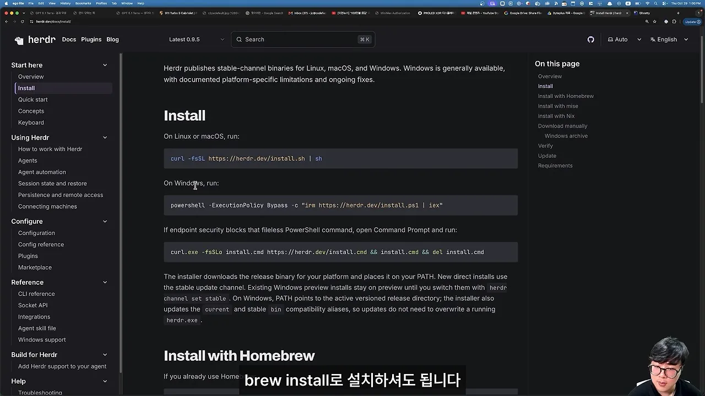
brew install herdr가 가장 간단해요.
영상 01:53에서 보기
화면은 사이드바와 메인 두 칸
처음 켜면 비어 있지만, 발표자 화면은 이미 세팅돼 있어서 복잡해 보여요. 아래 화면에서 왼쪽 사이드바를 보면 위쪽 machines 아래에 Local(자기 맥)의 워크스페이스 목록이, 그 밑에 Company Mac이 있어요. 아래쪽 agents에는 실행 중인 에이전트가 줄지어 있어요. 오른쪽 넓은 칸이 메인 화면이에요.
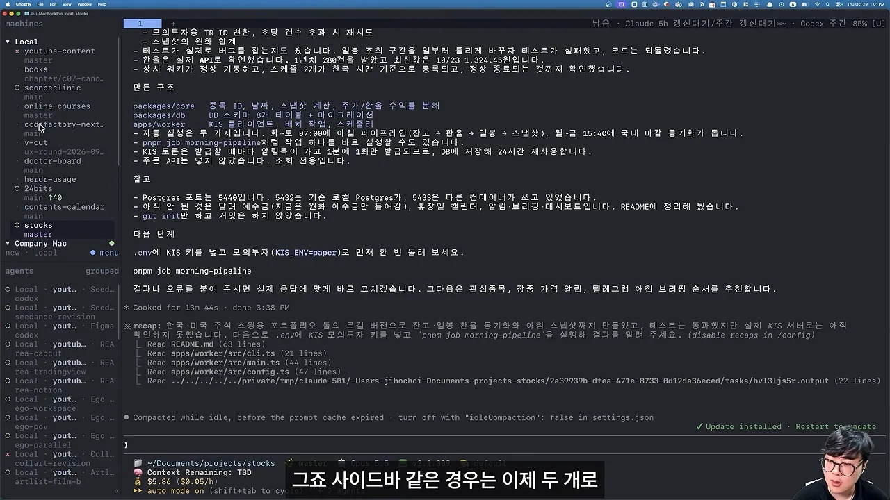
구조만 떼어 그리면 이래요. 발표자가 알아 두라고 한 세 가지가 사이드바 위, 사이드바 아래, 메인 화면이에요.
탭 만들고 이름 바꾸기
왼쪽 아래 new를 누르면 새 탭이 생기고, 탭 이름 칸을 오른쪽 클릭하면 이름을 바꾸는 작은 창이 떠요. 발표자는 모든 동작에 단축키가 있지만 다 외우기보다는 마우스를 쓰거나, 뒤에 보여 줄 것처럼 AI에게 부탁하라고 권해요.
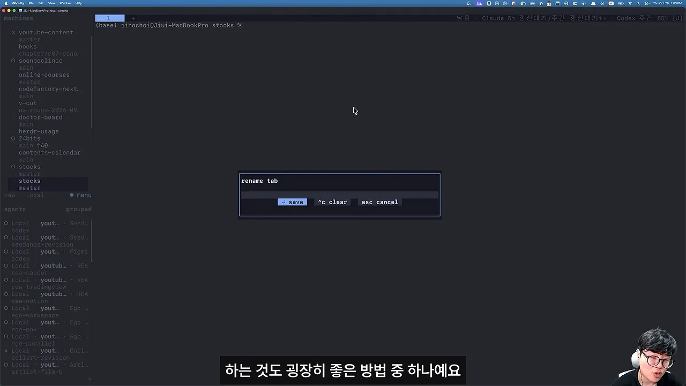
패널 나누기와 에이전트 상태 보기
마우스로 나누기
새 탭에서 demo 폴더를 만들고 Claude Code를 켠 다음, Codex도 같이 쓰고 싶으면 패널을 오른쪽 클릭해요. 아래 화면 가운데 메뉴에 Rename pane, Split right, Split down, Zoom, Close pane이 보여요. Split right를 고르면 오른쪽에 새 패널이 생기고, 거기서 Codex를 켜면 돼요.
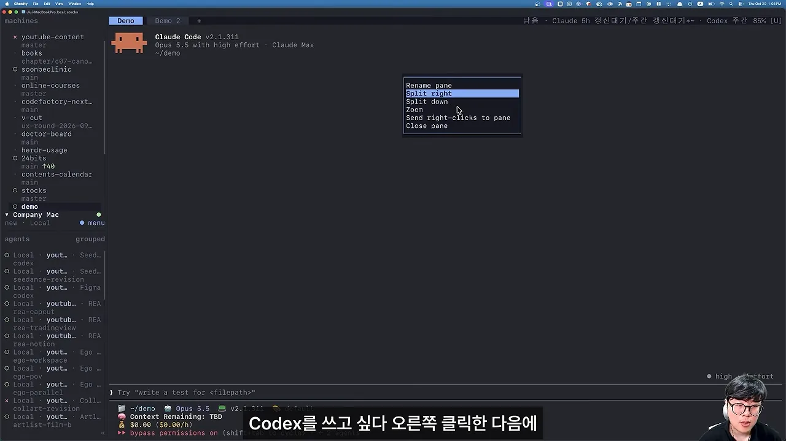
단축키로 나누기
단축키는 Ctrl+B를 프리픽스로 먼저 누르고 동작 키를 누르는 방식이에요. 아래 화면 맨 아래 줄에 'PREFIX' 표시가 켜져 있는 게 Ctrl+B를 누른 상태예요. 왼쪽 Claude Code, 오른쪽 Codex로 이미 나눠 둔 모습이에요.
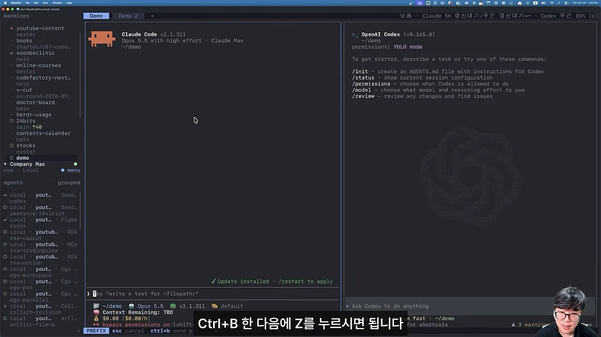
| 누르는 키 | 하는 일 | 발표자 설명 |
|---|---|---|
Ctrl+B → V | 세로로 나누기 | 버티컬의 V |
Ctrl+B → - | 아래로 나누기 | 0 옆의 마이너스 키 |
Ctrl+B → Z | 지금 패널만 크게 보기, 다시 누르면 원래대로 | 줌의 Z. 포커스된 패널은 테두리 색이 바뀌어요 |
사이드바에서 에이전트 상태 보기
Claude Code에 "안녕. 너희 이름은 뭐야?"라고 물으면 일하는 동안 사이드바에 진행 표시가 뜨고, 끝나면 초록색 표시로 돌아와요. 아래 화면 왼쪽 아래 agents 목록을 보면 맨 위 줄에 체크(✓)가, 나머지에 동그라미(○)가 붙어 있어요.
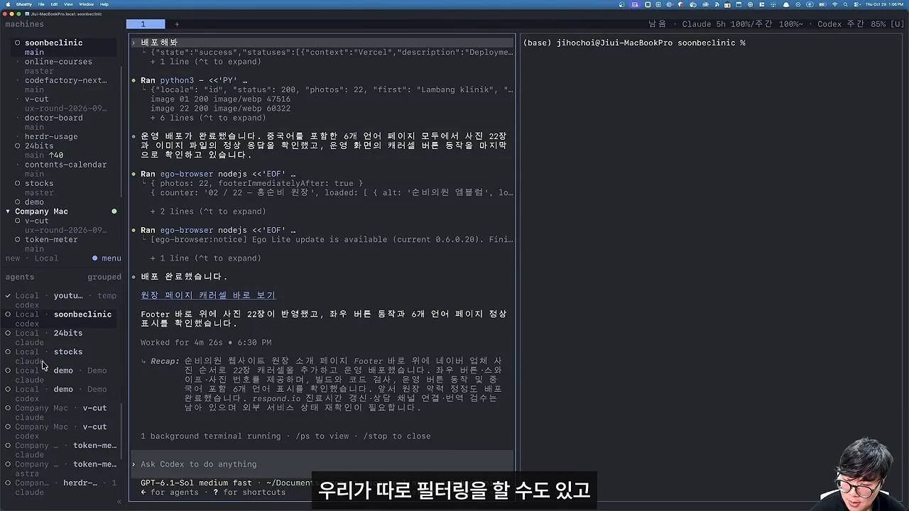
| 표시 | 뜻 | 할 일 |
|---|---|---|
| 진행 표시 | 작업 중 | 기다려요 |
| ✓ 체크 | 작업이 끝났어요 | 결과를 확인해요. 체크된 것만 걸러 볼 수 있어요 |
| ○ 동그라미 | 이미 확인한, 대기 중인 에이전트 | — |
| ✕ X | 막혀 있어요(권한 승인 같은 선택을 기다림) | 들어가서 권한을 주면 다시 움직여요 |
여기까지가 사람이 직접 알아야 하는 기본이에요. 이다음부터는 같은 일을 AI에게 시켜요.
AI에게 워크트리와 패널 만들기 시키기
먼저 Codex에게 "README.md 파일 만들고 git 초기화해 줘"라고 시켜 첫 커밋을 만들어요. 이제 새 기능을 따로 떨어진 곳에서 작업하고 싶다고 해 볼게요. 손으로 하면 new로 탭을 만들고, 워크트리를 만들고, 그 워크트리로 워크스페이스를 옮겨야 해요. 발표자는 이걸 한 문장으로 시켜요.
워크트리를 워크스페이스로 등록하기
"feat/update 워크트리를 생성하고 Herdr 워크스페이스에 등록해 줘"라고 하면 Codex가 Herdr 스킬을 읽고 명령을 직접 실행해요. 아래 화면 중간에 herdr worktree create --workspace wE --branch feat/update가 보여요. 맨 아래에는 브랜치, 경로(~/.herdr/worktrees/demo/feat-update), 새 워크스페이스 이름이 정리돼 있어요. 왼쪽 사이드바 demo 아래에도 feat/update가 새로 붙었어요.
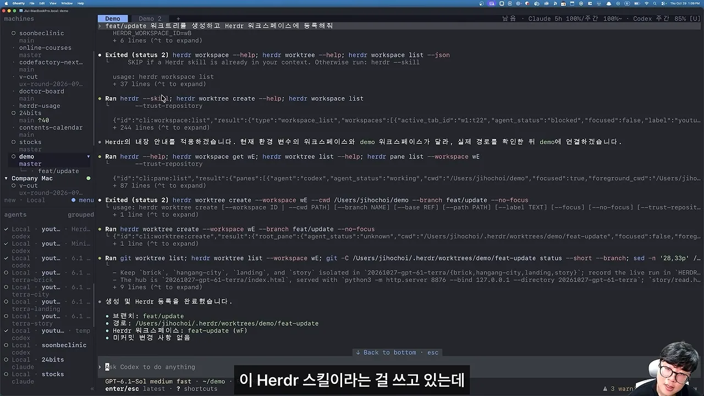
--help를 보고 다시 실행해요. 사람이 명령을 몰라도 되는 이유예요.
영상 06:33에서 보기
워크스페이스 없이 지금 탭에 패널로 열기
워크트리는 필요하지만 독립 워크스페이스까지는 싫을 때도 있어요. "feat/test 워크트리를 만들고 현재 탭의 오른쪽에 Codex --yolo 패인 생성해 줘"라고 하면 지금 탭을 확인한 뒤 오른쪽에 패널을 열어요. 아래 화면 오른쪽 패널에 Codex의 Folder access 확인 창이 떠 있고, 경로가 ~/.herdr/worktrees/demo/feat-test예요.
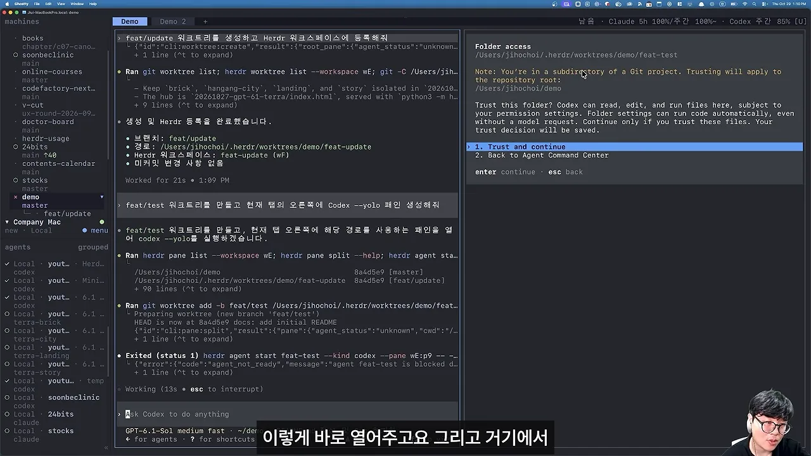
이번에는 사이드바에 새 워크스페이스가 생기지 않아요. 요청한 대로 지금 탭 안에 패널만 만든 거예요. 아래 화면 오른쪽 패널 위쪽 경로가 feat-test 워크트리를 가리켜요.
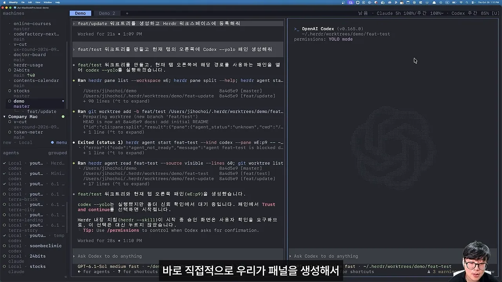
두 방법 중 무엇을 고를까요
발표자는 편한 쪽을 고르면 된다고 해요. 그림으로 나란히 놓으면 차이가 분명해요.
~/.herdr/worktrees/ 아래에 생겨요. 다른 건 사이드바에 올리느냐뿐이에요.탭도 같은 워크스페이스 안의 독립된 공간이에요. 발표자는 유튜브 콘텐츠용 워크스페이스 하나에 주제별 탭을 만들어 둬요. 같은 폴더라 스킬은 함께 쓰면서도 콘텐츠끼리 섞이지 않아요. 소프트웨어를 만드는 데 많이 쓴다면 워크트리를 독립 워크스페이스로 두는 쪽에 더 힘이 실릴 거라고 해요.
대화하는 에이전트와 일하는 에이전트 나누기
발표자는 관리용 메인 에이전트로 Codex를 즐겨 쓰고, 웹사이트나 앱을 만들 때는 거의 늘 Opus 5.5를 써요. 예시로 Codex에게 "주식 차트 모니터링하는 프로그램 만들 건데 기본 기능 세 가지만 리스트업해 줘"라고 물어 MVP(Minimum Viable Product)에 넣을 기능 세 가지를 정해요.
메인 세션에 바로 시키면 안 되는 이유
여기서 Codex에게 바로 구현을 시키면, 구현이 끝날 때까지 Codex와 대화를 할 수 없어요. 발표자는 이게 아주 큰 단점이라 Codex에게 시키든 다른 에이전트에게 시키든 꼭 새 독립 세션을 만들어 넘기라고 해요. 그래야 대화의 맥락은 메인에 남고, 일은 다른 에이전트가 해요. 영상은 이걸 아래 그림으로 보여 줘요. 왼쪽 메인 세션은 대화만 이어 가고, 오른쪽 Codex와 다른 에이전트 칸이 '주가 차트', '관심 종목', '조건 알림'을 하나씩 나눠 맡아요.
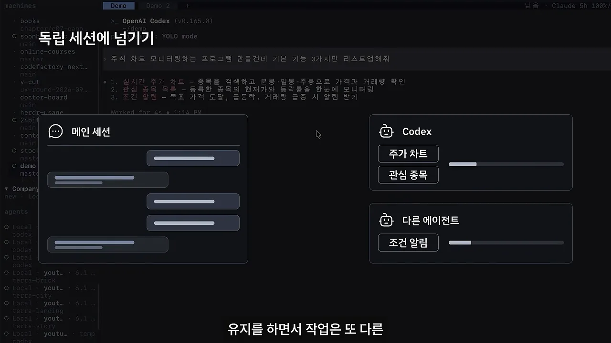
한 문장으로 넘기기
실제로는 "Opus 5.5 Effort High 패널을 현재 탭에서 생성하고 우리가 기획한 3가지 기능이 있는 차트 모니터링 사이트를 Next.js로 만들어 줘"라고만 해요. 아래 화면 왼쪽 Codex 기록에 herdr pane split, herdr agent start stock-opus --kind claude, herdr agent prompt stock-opus가 차례로 보여요. 오른쪽 새 패널에는 Claude Code가 떠 있고, Codex가 직접 쓴 긴 작업 지시문이 들어가 있어요.
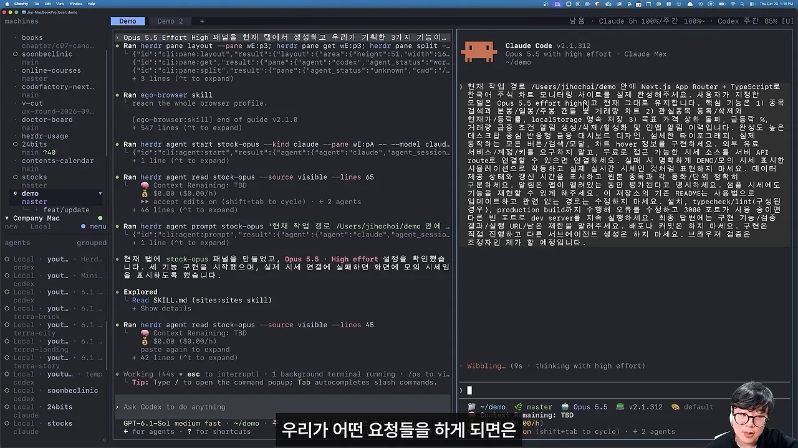
발표자는 이걸 메타프롬프팅까지 한 번에 된다고 말해요. Claude Code가 처음에 accept edits 모드로 떠도, bypass permissions 모드로 실행하라고 하면 그대로 해 줘요. 오가는 흐름을 순서대로 놓으면 이래요.
sequenceDiagram participant 나 participant M as 메인 Codex participant W as 새 패널 Opus 5.5 나->>M: 기능 세 가지 정하기 (대화) 나->>M: 패널 만들어 Next.js로 구현시켜 줘 M->>W: 패널 생성, Claude Code 실행, 프롬프트 입력 나->>M: 다음 기능·리서치 이야기 계속 W-->>M: 작업 끝났어요 (결과 보고) M-->>나: 결과 전달
오른쪽에서 실제 제품이 만들어지는 동안, 왼쪽에서는 어떤 기능이 더 있으면 좋을지 이야기하고 리서치를 미리 해 둬요. 그러다 다른 기능이 떠오르면 "패널 하나 더 만들어서 새 워크트리에 B 기능을 만들어 봐"라고 시키면 돼요. 그러면 세 번째 패널이 생겨 동시에 일해요. 발표자는 이렇게 계속 늘려 갈 수 있다는 점을 Herdr의 큰 장점으로 꼽아요.
같은 일을 여러 에이전트에 동시에 던지기
꼭 에이전트 하나에 일 하나로 짝지을 필요는 없어요. 발표자는 레이싱 게임을 예로 들어요. 메인 Codex에게 레이싱 게임의 핵심 요소 세 가지를 묻고, 이어서 그걸 담은 게임 콘셉트 세 가지를 추천받아요. 꼭 추천을 받을 필요는 없고, 대화하다 생긴 여러 선택지를 각각 다른 에이전트에게 넘기면 된다고 해요.
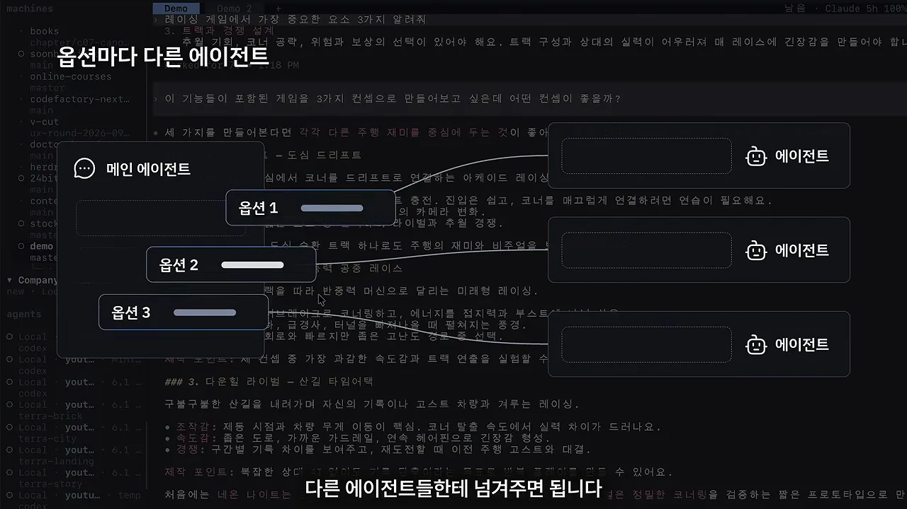
콘셉트 세 개를 동시에
요청은 대충 써도 돼요. "현재 탭에서 Opus 5.5 3개 만들어서 각 콘셉트 동시에 작업해 줘. Effort는 High." 조금 기다리면 패널 세 개가 생기고 각자 독립적으로 일을 받아요. 아래 화면 왼쪽 위 Codex 요약에 오른쪽 위 '네온 나이트', 왼쪽 아래 '그래비티 러시', 오른쪽 아래 '다운힐 라이벌'이 어느 패널인지 적혀 있어요. 세 패널은 각자 다른 폴더에서 게임을 만들어요.
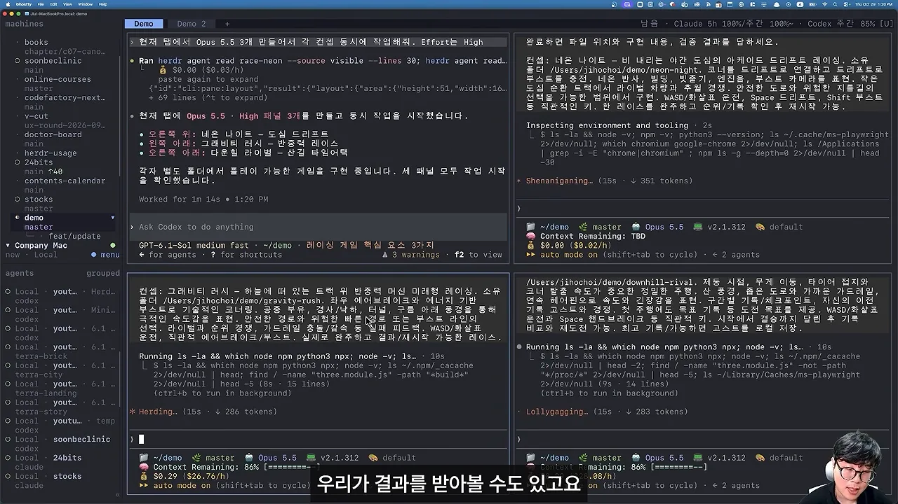
모델과 effort도 섞어서
발표자는 이 기능을 가장 많이 쓴다고 해요. 스크립트 초안이 여러 개 필요할 때, 버그 수정 결과를 여러 개 받아 보고 싶을 때가 있어요. 하나 만들어 보고 마음에 안 들어 다시 시키면 시간이 들어요. 그래서 처음부터 세 개, 다섯 개, 일곱 개를 동시에 돌려요. 영상 그래픽처럼 작업 하나를 Codex, Opus, MiniMax 같은 서로 다른 모델에, effort도 다르게 해서 던져요.
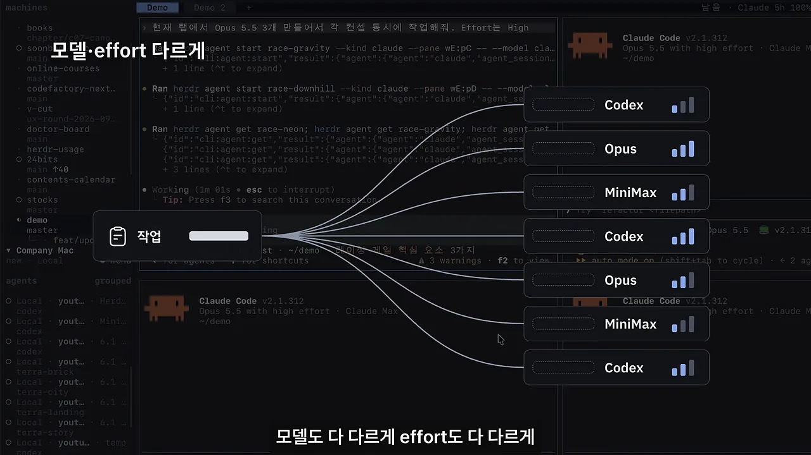
결과는 각자 다른 워크트리에 받아 가장 마음에 드는 걸 머지하거나, 이번 데모처럼 콘셉트별로 폴더를 나눠 받아요. 발표자는 Claude와 Codex 모두 상위 요금제를 쓰고 있어서, 구독을 여러 개 쓸수록 이 방식의 이득이 커진다고 말해요.
스킬로 단계까지 설계하면
한 걸음 더 가면, 메인 에이전트가 탭 안의 모든 패널을 백그라운드에서 계속 지켜보게 할 수 있어요. 발표자는 간단한 스크립트라 가능하다고 해요. 그리고 스킬에 단계를 꼼꼼히 설계해요. 발표자가 든 예는 웹사이트를 운영하며 사용자 피드백을 처리하는 흐름이에요.
flowchart LR A["사용자 피드백 받기"] --> B["중요도 리서치,
우선순위 매기기"] B --> C["중요한 것만
독립 브랜치에서 작업"] C --> D["검증 받기"] M["메인 에이전트
(계속 모니터링)"] -.-> B M -.-> C M -.-> D
이렇게 단계별로 어떤 모델로 어떻게 작업할지 정의해 두면, 꽤 복잡한 오케스트레이션도 쉽게 풀린다고 해요. 영상은 이 스킬을 실제로 보여 주지는 않고 구상만 설명해요.
원격 컴퓨터 등록하고 함께 쓰기
발표자가 꼽는 Herdr의 가장 강력한 기능은 다른 컴퓨터를 연결하는 기능이에요. 이것도 스킬에 다 들어 있어서 말로 시켜요.
등록된 컴퓨터 확인하기
"Herdr에 현재 등록돼 있는 Remote 컴퓨터 확인해 줘"라고 하면 Codex가 herdr machine list와 herdr machine status --json을 실행해요. 아래 화면 맨 아래 표에 등록된 컴퓨터 1대가 나와요. 이름은 Company Mac, 세션은 default, 상태는 '활성화 · 연결 가능'이에요.
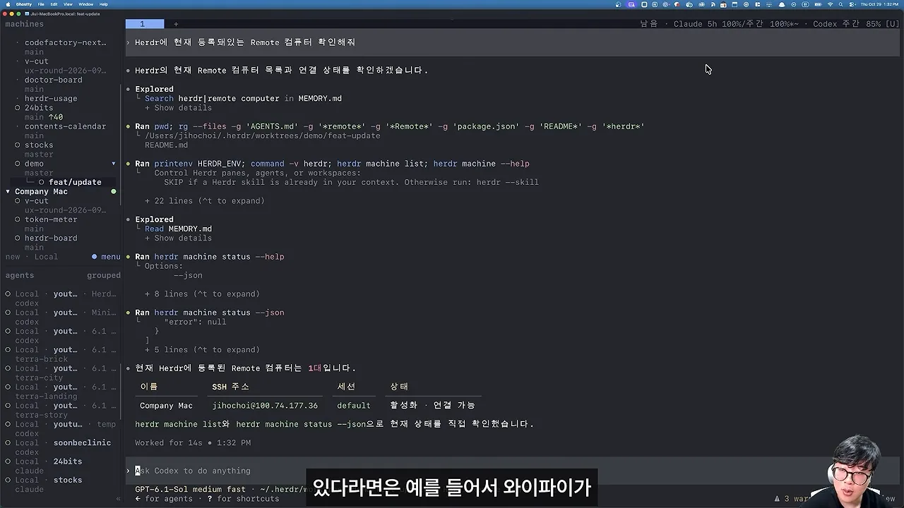
같은 네트워크의 컴퓨터 찾아 등록하기
컴퓨터들이 같은 와이파이나 같은 랜에 있으면 등록이 쉬워요. "현재 같은 네트워크에 있는 컴퓨터 전부 찾아 줘"라고 하면 에이전트가 네트워크를 뒤져 목록을 만들어요. 발표자는 이 찾기는 Herdr 기능이 아니라 IP(Internet Protocol) 테이블 같은 일반 도구로 하는 거라고 덧붙여요. 아래 화면 위 표에는 자기 MacBook Pro와 Company Mac 두 대가 '연결됨'으로, 아래 표에는 공유기와 종류를 모르는 기기가 따로 나와요.
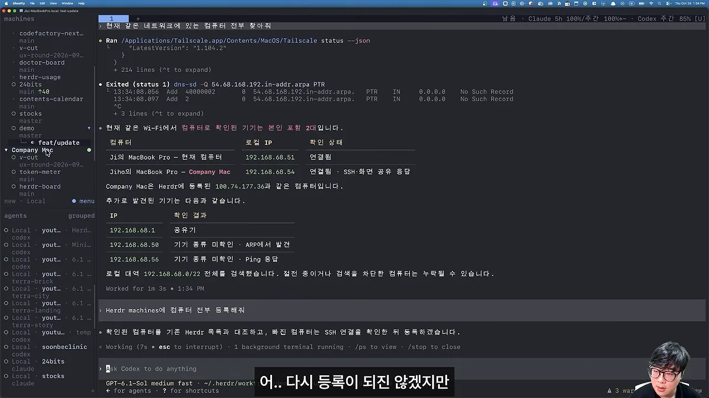
이어서 "Herdr machines에 컴퓨터 전부 등록해 줘"라고 하면 등록돼요. 발표자는 이미 등록해 둬서 새로 생기진 않았어요. 몇 대든 등록할 수 있어서, 맥 미니 열 대로 E2E(End-to-End) 테스트를 나눠 돌리는 것도 된다고 해요. 등록한 컴퓨터를 사이드바에서 고르고 new를 누르면 그 컴퓨터의 터미널이 열려요. 거기서 Codex를 켜면 프롬프트는 밖에 있는 맥북에 들어가요.
로컬 하나, 원격 둘로 나눠 돌리기
등록하고 나면 앞의 '콘셉트 세 개 동시에'를 여러 컴퓨터에 흩어 놓을 수 있어요. 대화는 로컬에서 하고, 에이전트만 다른 컴퓨터로 쏘는 거예요. 아래 화면 위쪽에는 앞 장면의 Opus 5.5 패널 3개 기록이, 가운데에는 새 요청 "패널 3개를 현재 탭에 만들거야 하나는 현재 로컬 컴퓨터에서 실행하고 두개는 Company Mac Remote Machine에서 실행해서 3가지 컨셉 구현해줘"가 보여요.
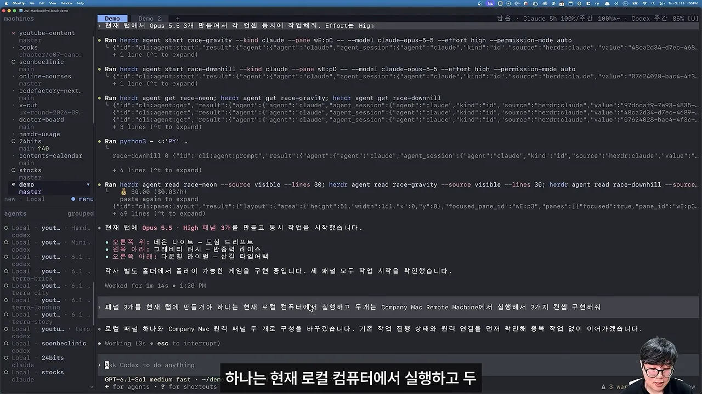
영상 그래픽도 같은 이야기를 해요. 원격 패널이 돌면 데이터, CPU(Central Processing Unit), GPU(Graphics Processing Unit)가 모두 원격 컴퓨터 쪽이에요. 컴퓨터가 세 대든 열 대든 한 컴퓨터에서 문어발처럼 지휘할 수 있다고 해요.
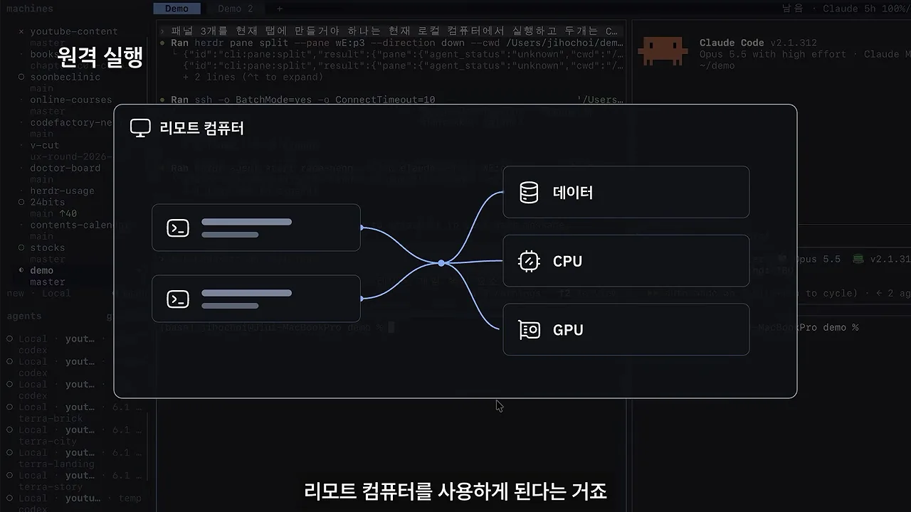
발표자가 좋아하는 쓰임: E2E 테스트
사람이 클릭하듯 눌러 보며 버그를 찾는 E2E 테스트는 계속 돌려야 할 때가 있어요. 로컬에서 Ego Lite 같은 도구로 해도 되지만, 로컬 컴퓨터는 꺼야 할 때도 있고 무거운 작업으로 CPU·GPU가 튀어 문제가 생기기도 해요. 그래서 원격 컴퓨터를 다 등록해 두고 Linear 같은 곳에서 이슈를 관리해요. 테스트할 거리가 100개면 열 묶음으로 나눠 원격 머신에 병렬로 던지고, 결과만 로컬로 받아요. 아래 그래픽 오른쪽 Herdr 목록에 등록된 원격 머신들이 줄지어 있어요.
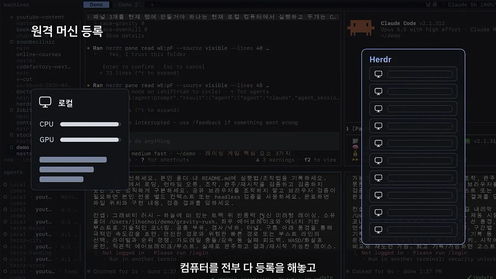
Tailscale로 밖에서 연결하기
지금까지는 같은 와이파이 안이라서 원격 머신이 바로 등록됐어요. 하지만 카페에 있으면서 회사의 맥 미니 열 대에 붙고 싶을 때도 있어요. 아래 그래픽처럼 카페의 내 컴퓨터와 회사 컴퓨터는 서로 다른 와이파이에 있어서 그대로는 닿지 않아요.
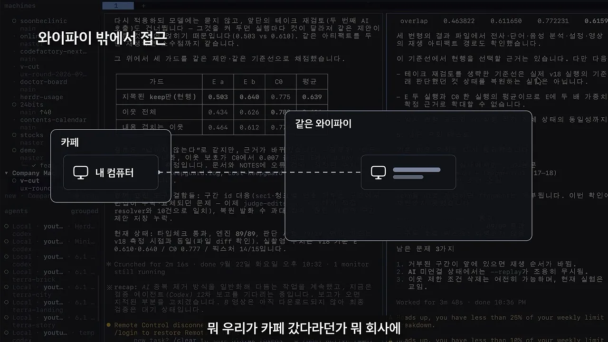
이럴 때는 VPN(Virtual Private Network)으로 네트워크를 같은 곳처럼 묶어요. 발표자는 Tailscale을 쓰고 무료로 쓰고 있다고 해요. 몇 대까지 무료인지는 잘 모르지만, 많아지면 돈을 내도 아깝지 않을 만큼 좋아하는 서비스라고 해요. 컴퓨터들을 Tailscale에 등록해 두고 원격으로 붙고 싶을 때만 켜면 돼요. 아래 그래픽은 카페의 내 컴퓨터와 회사의 맥 미니 10대가 한 네트워크로 묶인 모습이에요.
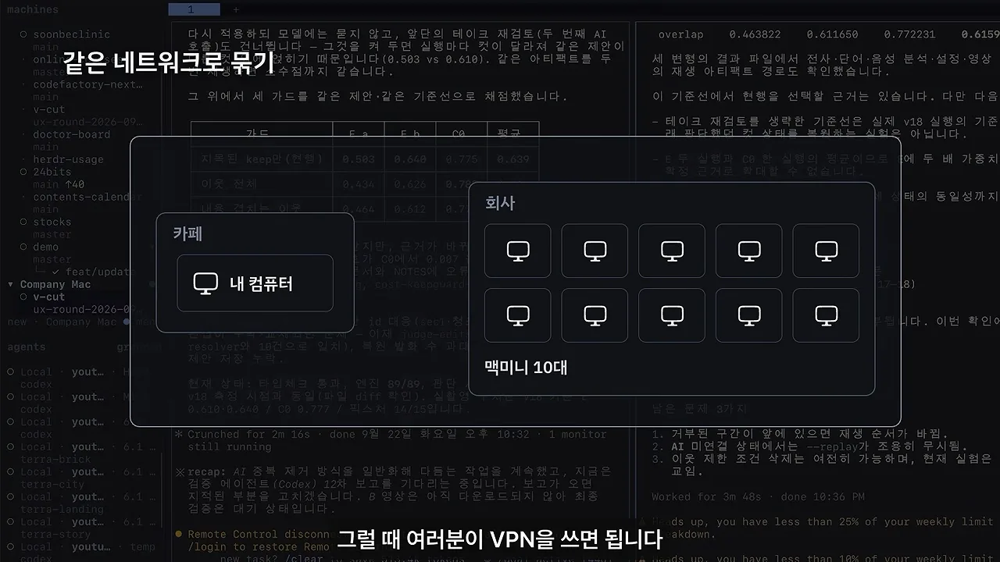